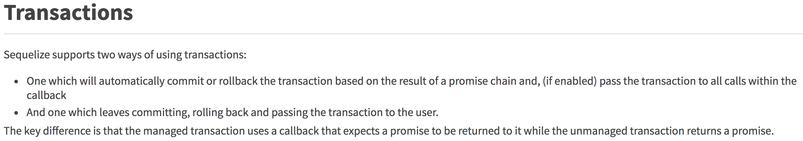

js对称加密算法
最近有用到 js 的对称加密的算法来解决一些简单的数据库字段加密问题。简单的 demo 如下：
1 | const crypto = require('crypto') |
使用 xlsx 转换文件
以下记录下最近使用的xlsx库，使用的目的是解决下面两个问题：
- 将 excel 转换为 CSV（如 /home/seven/201212 -> /home/seven/201212_txt）, 并写入原目录，因为后台不好处理 excel 文件。
- 用户点击下载按钮，则将数据库中的数据，转换为 excel 并下载到前端。
1 | const fs = require('fs') |
transformToExcel调用方式：1
2
3
4
5
6
7
8
9
10
11
12
13
14
15
16
17
18
19
20
21
22
23
24
25
26
27
28
29
30
31
32
33
34
35let sheetName = '表名'
let filename = `${+new Date()}.xlsx`
let sheetHeader = {
ID: 'ID',
Name: '姓名'
}
// 这里用来填充数据
let sheetData = await ctx.models.DBUser.findAll({
where : {
xxx : xxx
},
raw: true,
attributes: ['ID', 'Name']
})
let excelUtil = new ExcelUtil()
// 设置表宽度
let wscols = [
{wch: 28},
{wch: 20}
]
let data = excelUtil.transformToExcel(sheetData, sheetHeader, filename, sheetName, wscols)
// 设置 header 头信息 ，getAttachHeader 省略
ctx.set({
'Content-disposition': getAttachHeader(ctx, filename),
'Content-type': 'application/octet-stream'
})
// 返回给前端相应的内容
ctx.body = data
注意要结合前端代码来一起下载。如下，这样用户点击下载的时候，就完成了从数据库到 excel 的过称。
1 | let iframe = document.createElement('iframe') |
获得文件 MD5
目的是防止文件被篡改，主要是使用 crypto 库。传入文件的 buffer。1
2
3
4
5
6
7
8
9
10
11
12
13
14
15
16
17
18
19
20/**
* 获得文件的 MD5, 防止文件被篡改
* @param filename
* @returns {string}
*/
const genMd5 = filename => {
let buffer
try {
buffer = fs.readFileSync(filename)
} catch(e) {
return ''
}
let fsHash = crypto.createHash('md5')
fsHash.update(buffer)
return fsHash.digest('hex')
}
sequelize 的 transaction

sequelize 的事务主要有上面两种方式，一个是自行回滚的写法，另一个是手动声明回滚的写法。我用的是自行回滚的方法。文档
自行回滚的方法，需要在开始向sequelize.transaction传入一个 callback。这种时候，不需要再去进行t.commit() or t.rollback()了。当到 catch 内时，会自行回滚。
1 | return sequelize.transaction(t => { |
如果你是用的 async await ：1
2
3
4
5
6
7
8
9
10
11try {
await sequelize.transaction(async transaction => {
// step 1
await Model.destroy({where: {id}, transaction});
// step 2
await Model.create({}, {transaction});
})
} catch {
// 若上面执行过程中出现错误，则会到 catch 中，并且会自动回滚
}
如果不想使用自动回滚的这种方法，则不向sequelize.transaction()不传入一个 callback。1
2
3
4
5
6
7
8
9
10
11
12
13
14
15return sequelize.transaction().then(t => {
return User.create({
firstName: 'Bart',
lastName: 'Simpson'
}, {transaction: t}).then(user => {
return user.addSibling({
firstName: 'Lisa',
lastName: 'Simpson'
}, {transaction: t});
}).then(() => {
return t.commit();
}).catch((err) => {
return t.rollback();
});
});
如果使用 async await 则：1
2
3
4
5
6
7
8
9
10
11
12
13
14
15
16
17
18
19let transaction;
try {
// get transaction
transaction = await sequelize.transaction();
// step 1
await Model.destroy({where: {id}, transaction});
// step 2
await Model.create({}, {transaction});
// commit
await transaction.commit();
} catch (err) {
// Rollback transaction if any errors were encountered
if (err) await transaction.rollback();
}
很好用~
总结
5月就做了一个项目，主要是业务逻辑太复杂了，对数据库里的一个字段都要校验几百行代码。
5月去台湾团建，体验一般般，但也算是走出去看看了。
转眼间19年都快过去一半了。加油⛽️!
剩下的几天把项目分支再都验证下，写测试用例，优化下代码，然后再总结下几个问题。